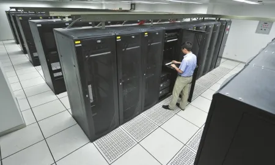
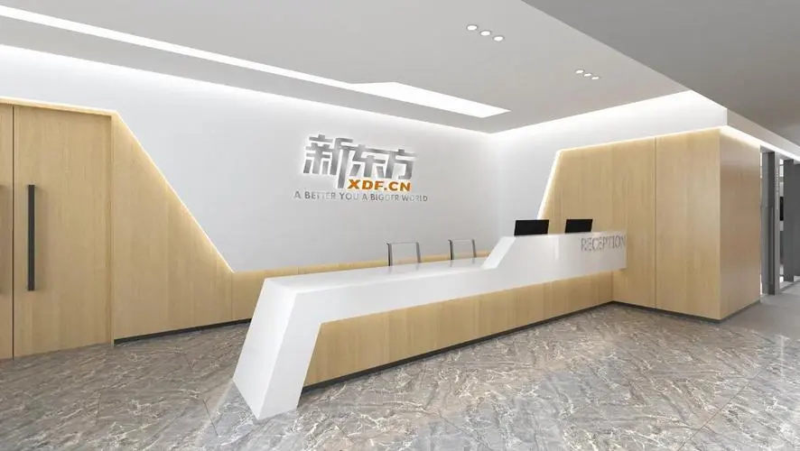
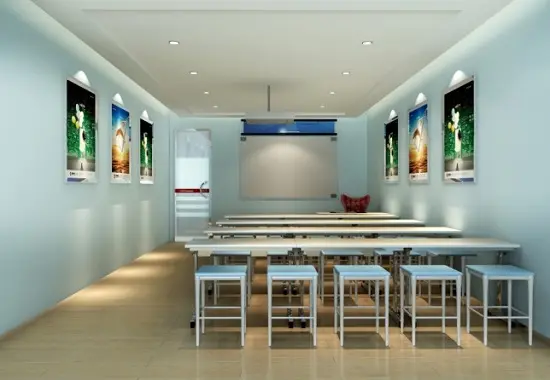
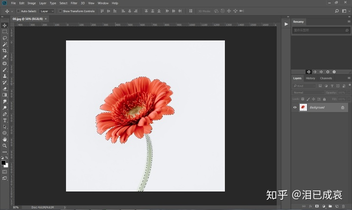
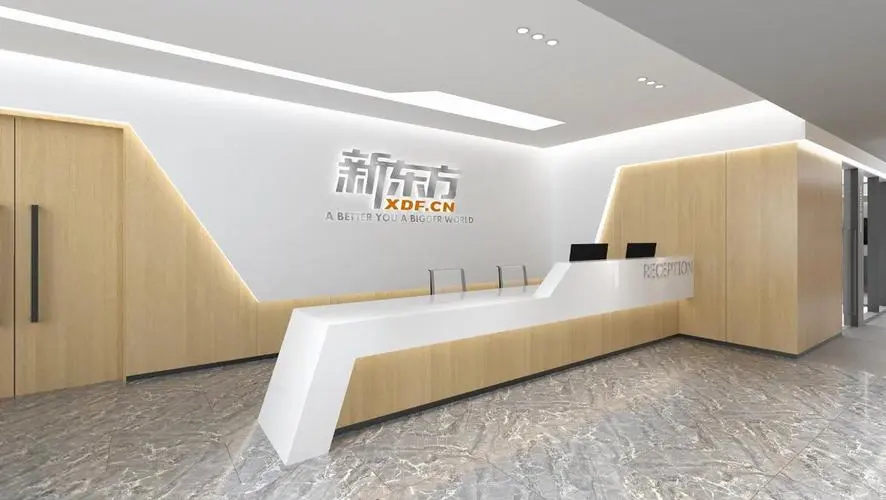
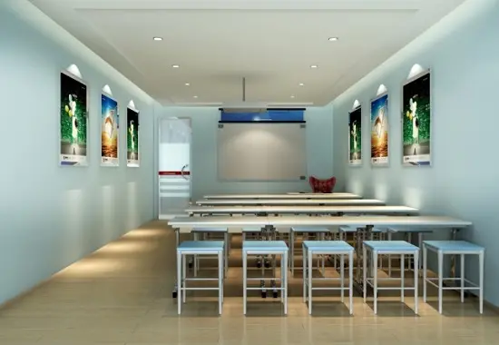
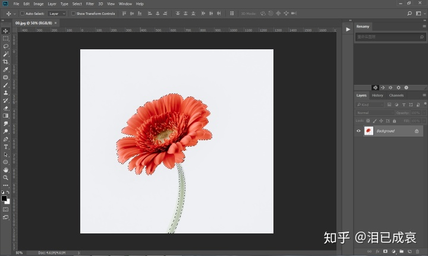

Resume
In my college time, I like several different courses most. The first is the modeling course, the second is the course made by it website, and the second is physical education. They represent my hobbies respectively. Using computers,designing graphics and websites are one of my hobbies. At the same time, sports is also a great hobby of mine. About my strengths, I am good at talking with people and helping others. I am a sunny and cheerful boy. I do things from beginning to end and like to specialize in learning. About my shortcomings, I may not do well enough in some things and need to be optimized. Sometimes I am anxious to do a good job. Lead to forgetting other things. About how to make use of my advantages, I can do some work about communicating with others in my work, so as to carry forward my advantage of being good at communication. At the same time, I will do things more carefully and do every little thing well, so as to achieve every major event.
| Serial number | Timeline | Work place | Job Description |
| 1 | 2014/7/1-2014/9/1 | Shaoxing xueeryou education institution | Electronic educational administration |
| 2 | 2017/7/1-2020/9/1 | Shaoxing Labor Bureau | Change the database usage and optimize the database. |
| 3 | 2020/7/1-2020/9/1 | Graphic company | Use PS to approve drawings for guests |
Picture recording at work

website
Shaoxing labor and Social Security Bureau


website
Shaoxing xueeryou education institution

website

This is my school.
Picture recording at work
website
Shaoxing labor and Social Security Bureau
 website
Shaoxing xueeryou education institution
website